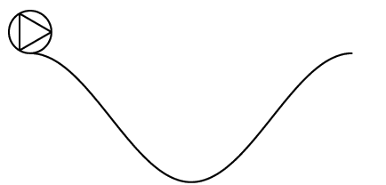

How I made this animated picture

Each individual picture frame was generated in matlab, see the source code below. Then the frames were put
together into a .gif file with the Unix program convert by typing
convert -crop 1030x472+132+200 -antialias -loop 1000 -delay 5 -geometry 50% -compress LZW frame10* rolling_ball.gif
into an xterm in the directory where the matlab code was saved and run. Check the Unix manual page
of convert for an explanation of the above options. Running convert can take one minute
even on a 1 GHz computer.
Note that after running the matlab code a lot of picture files will be created, each of the form
frame1xxx.jpg. The animated image itself will be called rolling_ball.gif, and after
convert has been run the individual picture frames can be deleted. There are other programs except
convert which can be used to put the frames together, one can for instance use the Gimp.
Finally, here's the matlab source code.
function rolling_ball()
clear;
set(gcf, 'color', 'white'); set(gcf, 'InvertHardCopy', 'off');
global R Bx By N L H;
N=1000;
nf=10;
L=5; H=2;
nr=10;
R=arc_length(0, L/2)/nr;
g=1;
t0=sqrt(H/g);
tt=linspace(0, t0, nf);
Ty=max(H-g*tt.^2, 0); Tx=(L/2/pi)*acos(2*Ty/H-1);
Dy=-(pi*H/L)*sin(2*pi*Tx/L);
Cx=Tx+R*cos(pi/2+atan(Dy)); Cy=Ty+R*sin(pi/2+atan(Dy));
Tx=[Tx L-Tx(1+length(Tx)-(2:length(Tx)))]; Ty=0.5*H*(cos(2*pi*Tx/L)+1);
Cx=[Cx L-Cx(1+length(Cx)-(2:length(Cx)))]; Cy=[Cy Cy(1+length(Cy)-(2:length(Cy)))];
Fx=0:(1/N):L; Fy=0.5*H*(cos(2*pi*Fx/L)+1);
Theta=0:1/N:2*pi;
Bx=R*cos(Theta); By=R*sin(Theta);
cf=0;
for i=1:(2*nf-1)
clf; hold on; axis equal; axis off; axis([-1.1*R L+1.1*R -0.1*R 2.1*R+H]);
theta=arc_length(Tx(1), Tx(i))/R;
plot(Fx,Fy,'LineWidth', 2, 'color', [0 0 0])
plot_ball(Cx(i), Cy(i), theta);
pause(0.01)
cf=cf+1;
saveas(gcf, sprintf('frame%d', 1000+cf), 'jpg')
disp(sprintf('frame%d', 1000+cf));
end
for i=(2*nf-1):(-1):1
clf; hold on; axis equal; axis off; axis([-1.1*R L+1.1*R -0.1*R 2.1*R+H]);
theta=arc_length(Tx(1), Tx(i))/R;
plot(Fx,Fy,'LineWidth', 2, 'color', [0 0 0])
plot_ball(Cx(i), Cy(i), theta);
pause(0.01)
cf=cf+1;
saveas(gcf, sprintf('frame%d', 1000+cf), 'jpg')
disp(sprintf('frame%d', 1000+cf));
end
function plot_ball(a, b, theta)
global R Bx By;
x1=R*cos(theta); y1=-R*sin(theta);
x2=(-x1-y1*sqrt(3))/2; y2=(-y1+x1*sqrt(3))/2;
x3=(-x2-y2*sqrt(3))/2; y3=(-y2+x2*sqrt(3))/2;
x1=x1+a; x2=x2+a; x3=x3+a;
y1=y1+b; y2=y2+b; y3=y3+b;
plot([x1 x2], [y1, y2], 'LineWidth', 2, 'color', [0 0 0]);
plot([x2 x3], [y2, y3], 'LineWidth', 2, 'color', [0 0 0]);
plot([x3 x1], [y3, y1], 'LineWidth', 2, 'color', [0 0 0]);
plot(Bx+a, By+b, 'LineWidth', 2, 'color', [0 0 0]);
function l=arc_length(x1, x2)
global N L H;
M=floor(N*(x2-x1));
l=0;
for i=1:M
x=x1+(i-1)/N;
s=-(pi*H/L)*sin(2*pi*x/L);
l=l+sqrt(1+s^2);
end
l=l/N;